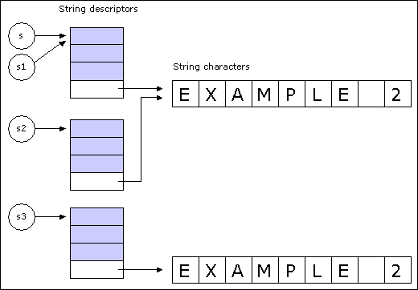

| Eiffel ENViSioN! |
| EiffelBase, The Kernel |
|
In addition to basic concepts close to the language level, the Kernel covers such common needs as input and output, storage and retrieval of objects on persistent storage, fine control over exception handling and memory management, and access to operating system facilities. The kernel can be divided into 5 logical clusters of classes:
Universal Class and its FeaturesThe Eiffel inheritance mechanism is set up in such a way that every class is a descendant of a Kernel Library class called ANY. The features of this class provide a number of generally applicable facilities covering such needs as comparison, copying and rudimentary input and output. The structure of universal classesEvery class which has no inheritance clause is understood to have an inheritance clause of the form
inherit
As a result, every developer-defined class is a descendant of ANY. You may introduce your own project specific features in ANY so that all the classes of your system will be able to use these features. Using the universal classesIf you need to rename or redefine a feature inherited from one of the universal classes, you should include an explicit inheritance clause, as in
class
The features of ANY are usable in both qualified and unqualified form. For example, the argumentless function out, which produces a printable representation of any object, may be called under either of the forms
x := out
The first call yields a printable representation of the current object; the second, which assumes that a is not void, yields a printable representation of the object attached to a. Input and output featuresSome of the features of ANY
cover common input and output needs. Copy and comparison routinesProcedure copy copies the fields of an object onto those of another. It is used under the form
target.copy
(source)
Here both target and source must be non-void; this means that copy is only good for copying onto an object that already exists. If you need both to allocate a new object and to initialize it as a copy of another, use the function clone. For non-void source, the assignment
target :=
clone
(source)
starts by creating a new object. If source is void, target will be made void too.
The boolean function
equal
compares two objects for field-by-field equality. This is different from the equality operators
= and /= which, in the case of reference types,
compare references, not objects. Type information
The string-valued query generator, applied to any object, returns the name of the
object’s generating class: the class of which it is an instance. The boolean function
conforms_to
makes it possible to test dynamically whether the
type of an object conforms to that of another - that is to say whether the first one’s
generator is a descendant of the second one’s. Miscellaneous
The query Void, of type
NONE, denotes a reference that is always void - not attached to
any object. Language-related FacilitiesA number of classes offer facilities which are very close to the language level. Here too the book Eiffel: The Language covers the classes in detail, so we can satisfy ourselves with a quick summary; the flat-short forms appear in part C. Basic typesThe basic types BOOLEAN,
CHARACTER,
INTEGER, REAL
and DOUBLE are defined
by classes of the Kernel library.
infix "+" (other:
REAL):
REAL
but there is actually no problem here. A language convention applicable to all arithmetic expressions, the Balancing rule, states that in any such expression all operands are considered to be converted to the heaviest type, where DOUBLE is heavier than REAL and REAL is heavier than INTEGER. So mixed-type arithmetic, consistent with common practice, is possible and indeed frequent. ArraysTo create and manipulate one-dimensional arrays, use class ARRAY
of the Kernel Library. Arrays are not primitive language elements; instead, they are handled through class
ARRAY. This class is “normal” in the sense that it may be used just as any other class
by client and descendant classes. It is also somewhat special, however, in that the Eiffel
compiler knows about it and uses this knowledge to generate efficient code for array
operations.
create
my_array.make
(1, u)
where the arguments indicate the lower and upper bounds. These bounds will then be
accessible as my_array.lower
and my_array.upper. The number of items is
my_array.count;
feature capacity
is a synonym for count. The class invariant expresses
the relation between count,
lower
and upper.
x := my_array.item
(i)
Function item has an infix synonym, infix "@", so that you may also write the first assignment above more concisely as x := my_array @
iFeatures item, infix "@" and put have preconditions requiring the index (iin the above calls) to be within the bounds of the array. This means that you can detect bounds violations (which correspond to bugs in the client software) by using a version of class ARRAY compiled with precondition checking on. The bounds of an array may be changed dynamically through procedure resize. Previously entered elements are retained. Rather than an explicit resize, you may use calls to procedure force which has the same signature as put but no precondition; if the index is not within the current bounds force will perform a resize as necessary. Optimizing array computationsCAUTION: Although ARRAY benefits from an efficient implementation, its more advanced facilities such as resizing do not come for free. For extensive computations on large arrays, an optimization may be desirable, bypassing these facilities. The technique yields loops that run at about the same speed as the corresponding loops written in C or Fortran (the usual references for array computations). It is of interest for advanced uses only, so that you may safely skip this section on first reading unless your domain of application is numerical computation or some other area requiring high-performance array manipulations. The optimization relies on the class SPECIAL, used internally by ARRAY but of no direct interest to client developers in most common uses. With the declarations
my_array: ARRAY
[SOME_TYPE]
you may use direct_access in lieu of my_array within a critical loop, provided none of the operations may resize the array. Typically, the operations should only include put and item. In such a case you can use the following scheme:
direct_access:=
my_array.area
This replaces an original loop where the operations were on my_array. Feature area
of ARRAY gives direct access to the special object, an instance of
SPECIAL, containing
the array values. Features
put
and
item
are available in SPECIAL
as in ARRAY,
but without the preconditions; in other words, you will not get any bounds checking.
Instances of SPECIAL
are always indexed from zero, in contrast with arrays, whose lower bound is arbitrary, 1 being the most common value. But rather than performing
index translations (that is to say, subtracting
my_array.lower
from
index
throughout the loop) it is preferable to use the following simple technique: if the lower bound lb of
my_array is 1 or another small integer, use 0 as lower bound instead when creating
my_array, but only use the positions starting at lb. You will waste a few memory positions
(0 to lb-1), but will not have to change anything in your algorithm and will avoid costly
subtractions. TuplesA new Kernel Library class is introduced: TUPLE. [CONF1] For n >= 0 TUPLE [U1, U2, ..., Un, Un+1] conforms to TUPLE [U1, U2, ..., Un] (and hence to TUPLE [T1, T2, ..., Tn] if each of the Ui conforms to each of the Ti for 1 <= i <= n.) In particular all tuple types conform to TUPLE, with no parameter. [CONF2] For n >= 0 If *every* one of the types T1, T2, ..., Tn conforms to a type T, then TUPLE [T1, T2, ..., Tn] conforms to ARRAY [T]. Definition: a "tuple type" is any type based on class TUPLE, i.e. any type of the form TUPLE [T1, T2, ..., Tn] for any n (including 0, for which there is no generic parameter). (Note 1: CONF1 should be understood in terms of the underlying mathematical model. Mathematically, TUPLE [T1, T2, ..., Tn] is the set TUPLEn of all partial functions f from N+ (the set of non-negative integers) to T1 U T2 U ... Tn, such that:
With this definition, TUPLEn is indeed a subset of TUPLEn+1, and in particular TUPLE0, the empty set, is a subset of TUPLEn for any n.) Semantics: an instance of TUPLE [T1, T2, ..., Tn] is a tuple whose first element is an instance of T1, the second element being an instance of T2 etc. (The precise definition is the mathematical one given in note 1.) Note that there can be more than n elements to the tuple: for example a tuple with first element 5 and second element "FOO" is an instance of all of the following tuple types: TUPLE; TUPLE [INTEGER]; TUPLE [INTEGER, STRING]. (Note 2: It may seem restrictive at first to permit only one class, TUPLE, to have an arbitrary number of actual generic parameters. Why not have a general mechanism for declaring any class C so that all of C [X], C [X, Y] etc. are valid? But in fact this is not really a restriction. To obtain this effect without any complicated language convention, just declare C as C [G -> TUPLE] and then use the generic derivations C [TUPLE [X]] C [TUPLE [X, Y]]and so on. This also makes it possible to have the effect of some fixed parameters and some variable ones, as in C [G, H, I -> TUPLE] so we have all the necessary flexibility.) Tuple expressionsLet e1, e2, ..., en be expressions of respective types T1, T2, ..., Tn. Then the expression [e1, e2, ..., en] denotes an instance of TUPLE
[T1, T2, ..., Tn], whose first element is e1,
the second element being e2 etc. [1, 2, 3] is a tuple with three elements (representing an instance of TUPLE [INTEGER, INTEGER, INTEGER]), [1, [2, 3]] is a tuple with two elements, the second one itself a tuple; the overall
expression represents an instance of TUPLE
[INTEGER,
TUPLE [INTEGER,
INTEGER]. Tuple featuresThe exact specification of class TUPLE will be described in an addition to ELKS. The principal features are:
Other features under consideration include:
What have we gained?First we have solved the only case in the Eiffel
language in which an expression has no precisely defined type: polymorphic
manifest arrays. We don't have manifest arrays any more, but manifest
tuples, with a precisely defined type. No incompatibility is introduced
thanks to rule CONF2. The original syntax for manifest arrays, Result :=
<<e1, e2,
..., en>>, will continue to be supported. Result := [e1, e2, ..., en] Also, from a theoretical viewpoint, feature calls are simpler and more homogeneous: every feature takes exactly one tuple as argument and returns exactly one tuple as a result. (Either of these tuples may be empty: the first for a feature with no argument, the second for a procedure.) The syntax for a call becomes Feature Arguments with Arguments defined as Tuple_expression where the Tuple_expression uses the form given in section 2 but with the outermost [ and ] delimiters replaced by parentheses to conform to usual practice. So the call f (a, b, c) which we continue to think of as having three arguments a, b and c, formally has only one tuple argument [a, b, c]. This is of course not to be confused with a call of the form g ([a, b, c])tr which has one argument (a tuple with three elements) in both the ordinary and the formal sense. Active, iterators, numerical applications, introspectionFor a set of important applications of tuples see the book chapter on agents and iterators which also covers aspects of numerical software and related topics following from the tuple mechanism. Temporary limitationsThe implementation of tuples has the following limitations:
StringsStrings are handled by class STRING, similar in many respects to ARRAY. Strings are of arbitrary size. The make creation procedure takes an integer argument, as in<
s,
s1,
s2,
s3:
STRING
The argument indicates the number of characters for the initial allocation. This is not an absolute limit: the string will automatically grow or shrink as a result of future operations. You may always request a resizing explicitly by calling procedure resize. String descriptorThe object attached at run-time to an entity such declared of type STRING is not the actual sequence of characters but a string descriptor, which contains a reference to the actual string contents. As a result, four assignment or assignment-like operations are possible: As illustrated below, A1 is a reference assignment: s1 will be attached to the same descriptor as s. A2 keeps the descriptors distinct, but make them refer to the same sequence of characters. A3 uses the redefinition of clone for class STRING: s3 will be attached to a new string, completely distinct from the string attached to s1 although made of identical characters. A4 has almost the same effect as A3, but is only applicable if s4 was not void, and will override the existing descriptor rather than creating a new one. fig. 1: Effect of string assignment and copy operations BASIC_ROUTINES provides a number of conversion functions, such as charconv. Files, Input, OutputA few classes of the Kernel Library support file manipulation, input and output: STD_FILES, FILE, DIRECTORY and UNIX_FILE_INFO. For simple applications it suffices to use STD_FILES, but to understand the concepts better it is preferable to look first at the other two. General filesFILE describes the notion of sequential file viewed as a data structure which fits in the
general taxonomy of EiffelBase.
Caution:
Note the application to input features of the command-query separation principle. Queries are available to determine the status of a file, in particular exists, is_readable, is_executable, is_writable, is_creatable, is_closed, is_open_read and so on.
Caution:
You will notice in the flat-short form that all these queries except the first have
exists
as a precondition. This precondition is good for efficiency since it saves an
existence test - a relatively expensive operation - when you know that a certain file
exists. But it also means that if you have any doubt about the file’s existence you must
use the queries in the style
FILE is a deferred class. Various implementations are possible. A quite detailed one is
PLAIN_TEXT_FILE, which adds many features for accessing
reading and writing data from/to a file. Basic input and outputRegardless of the operating system that you use, for simple input and output STD_FILES is sufficient. You may inherit from that class to gain direct access to its features; or you may declare an entity of type STD_FILES. But remember that a feature of this type is always available: io, from class ANY. Thanks to this feature you may include simple input and output in any class, with instructions such as
io.put_string
("My message")
STD_FILES
defines three default files through features input,
outputand
error.
These features are Once functions, so that the first reference to any one of them will
automatically create the corresponding file descriptor and open the associated file. PERSISTENCE, STORAGE AND RETRIEVALMost object-oriented applications need the ability to store object
structures on persistent storage for later retrieval, and to transfer
such object structures to other applications. Persistence completenessA fundamental requirement on object persistence mechanisms is the
Persistence Completeness rule, stated as follows in Eiffel: The
Language: Using the storage and retrieval facilitiesClass
STORABLE is meant to be used as ancestor. You can use its features
in any descendant C; for example a routine
of C may contain a call of the form
basic_store
(my_descriptor). Varieties of store operationsTwo variants of the store operation are supported: basic store and
general store. Basic store produces more compact structures in the
resulting files, and is slightly faster; but the resulting structure is
dependent on the system which executes the store operation (“System” is
taken here, as elsewhere in this documentation, in its Eiffel sense of
an executable assembly of classes, compiled together with the help of an
Ace specification.) This means that you can use procedure
basic_store to store an object structure during an execution of a
system if you will only retrieve it later in that execution, or in a RetrievalYou only need to be aware of the difference between basic and general
store at storage time. The stored structure will always be available
through feature retrieved; this feature will figure out, from the format
of the stored structure, whether it was stored by
basic_store or
general_store, and will decode it accordingly.
x ?=
retrieved
(my_descriptor)
The assignment attempt is necessary because retrieved returns a result of type STORABLE whereas the type of x will be based on a proper descendant of STORABLE. If the structure in the file has been corrupted and retrieved is unable to do its job, it will trigger an exception. The code for that exception in class EXCEPTIONS (which inherits it from EXCEP_CONST and is discussed in the next section, together with the notion of exception code) is Retrieve_exception. Recoverable storableSometime you will be in a position where the schema of a class will have changed between the time you stored your object and the time you are trying to retrieve it. Such changes include:
The storable mechanism allows you to retrieve the old version of the object only if it was saved using the independent_store facility. Each time you retrieve an object of a certain base class whose schema has changed, the feature correct_mismatch will be called. This feature is defined in ANY and by default will raise an exception. To handle the mismatch, you need to redefine correct_mismatch in the base class whose schema has been changed. For example in EiffelBase, HASH_TABLE has changed between version 5.1 and version 5.2 to use SPECIAL rather than ARRAY for its internal data storage. To retrieve a 5.1 version of HASH_TABLE , you need to define correct_mismatch as following:
correct_mismatch is
Note the use of mismatch_information, this is a once feature of ANY of type MISMATCH_INFORMATION which behaves like a HASH_TABLE. The keys of the table are the names of the attributes on which a mismatch occurred and the values are the corresponding object fields as they were originally stored. In this particular case of HASH_TABLE we know that the previous version was an ARRAY, so we do an assignment attempt and if it succeeds we assign its area to the corresponding attribute of HASH_TABLE. If a class name changed, then you need to create an instance of CLASS_NAME_TRANSLATIONS, it behaves like a HASH_TABLE where the keys represent the old name, and the value the new name. This instance needs to be created before the call to retrieved. Access To Internal PropertiesIn some applications you may need to fine-tune the exception handling and memory management mechanisms. You may also need a simple way to access command-line arguments. In less common cases you may require low-level access to internal properties of objects. Exception handlingClass EXCEPTIONS
enables you to control the handling of exceptions. UNIX_SIGNALS, discussed next, complements it for the special case of fine-grain signal
handling on Unix or Unix-like platforms. Both are meant to be inherited by any class
that needs their facilities.
The class also provides a set of constant integer-valued attributes which denote the
various possible codes, such as No_more_memory, Routine_ failure and Precondition_violation. So you can test the value of exception against these codes if you need to
ascertain the precise nature of an exception. To keep EXCEPTIONS
simple these constant attributes are declared in a class EXCEP_CONST, of which
EXCEPTIONS
is an heir. CAUTION: The reason for the presence of these pairs is that the immediately visible cause of a routine interruption may not be the real one. Assume that routine r from class C, which has a Rescue clause, calls s from D with no Rescue clause, and that some call executed by s causes a precondition violation. Because s has no Rescue clause of its own, s will fail. Up the call chain, the first routine that has a Rescue clause - r itself, or one of its own direct or indirect callers - may process the exception; but if it examines the exception code through attribute exception it will get the value of Routine_failure. This may be what you want; but to handle the situation in a finer way you will usually need to examine the code for the original exception, the one that interrupted s. This code will be accessible through the attribute original_exception, which in this case will have the value of Precondition, the exception code for precondition violations. So you have the choice between exploring the properties of the original exception, or those of the resulting routine failures. Just make sure you know what you are looking for. As you will see from the header comments in the flat-short form of class EXCEPTIONS, the queries that return detailed information about an exception, such as assertion_violation, all give an answer determined by original_exception rather than exception, since when the two are different (that is to say, when you handle the exception in a routine other than the original recipient) the value of exception is always Routine_failure and there is nothing more to say about it. Signal handlingThe features of class EXCEPTIONS
enable you to determine whether a certain
exception is a signal - an operating system event such as may result from a child
process that disappears, a window that is resized, a user that hits the Break key and
many others. But they do not give you more details because the exact set of possible
signals is highly platform-dependent. Memory managementClass MEMORY, like EXCEPTIONS, is meant to be used as an ancestor by classes that
need its facilities. It offers a number of features for controlling memory management
and fine-tuning the garbage collection mechanism, a key component of the ISE Eiffel
environment. Caution: This example is typical of proper uses of dispose.In a dispose procedure you should not include any instruction that could modify the Eiffel object structure, especially if some objects in that structure may themselves have become unreachable: these instructions could conflict with the garbage collector’s operations and cause catastrophic behavior. The legitimate use of dispose redefinitions is for disposing of non-Eiffel resources. Other features of MEMORY
provide direct control over the operation of the garbage collector. You can in particular stop garbage collection through a call to
collection_off,
and restart it through a call to
collection_on.
By default, garbage collection is always on (a testimony to its authors’ trust in its efficiency).
Garbage collection is normally incremental, so as not to disrupt the application in a
perceptible way. To start a complete garbage collection mechanism - reclaiming all
unused objects - call procedure full_collect. The remaining features of MEMORY
enable finer control of the collection mechanism and are useful in special cases only.
You will even find a free procedure providing brave (and competent) developers with a
mechanism for reclaiming individual objects manually. Command-line argumentsWriting, assembling and compiling a system yields an executable command. The system’s users will call that command with arguments. These are normally provided in textual form on the command line, as in
your_system arg1 arg2 arg3
although one may conceive of other ways of entering the command arguments, such as
tabular or graphical form-filling. In any case the software must be able to access the
values passed as command arguments.
|
| © 2003-2004 Eiffel Software. All rights reserved. |